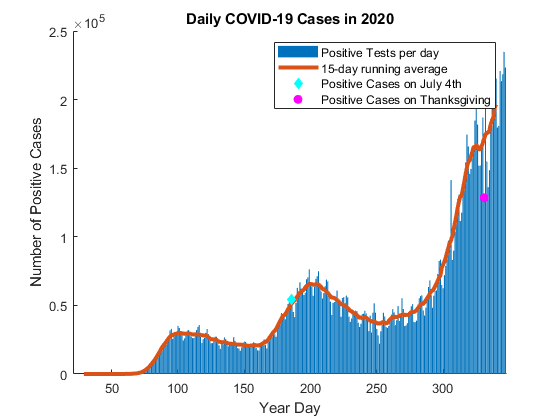
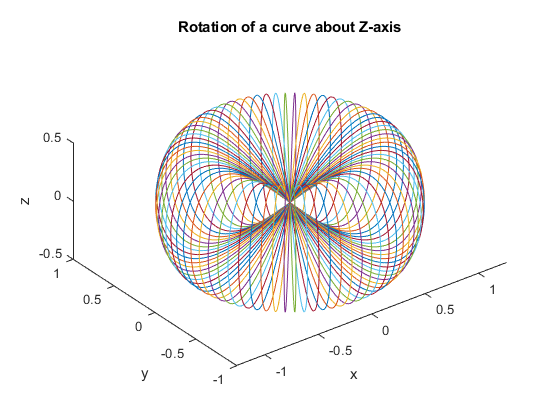
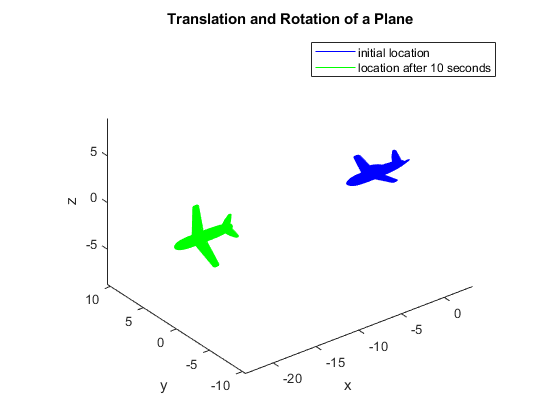

clear all;
close all;
clc;
format long;
name = 'Natalie Ratzlaff';
id = 'A170911327';
hw_num = 1;
data = readmatrix("US_COVID19.txt");
date = data(:,2);
p1a = data(find(date == 20200704),4)
p1b = data(find(date == 20201126),4)
for i = 8:1:319
data(i,6) = 0;
for j = -7:7
data(i,6) = data(i,6) + data(i+j,4);
end
data(i,6) = data(i,6)/15;
end
data(1:7,6) = NaN;
data(320:326,6) = NaN;
hold on;
figure(1);
xlabel('Year Day');
ylabel('Number of Positive Cases');
bar(data(:,1),data(:,4));
plot(data(:,1),data(:,6),'LineWidth',3);
plot(186,p1a,'cdiamond','MarkerFaceColor','c');
plot(331,p1b,'mo','MarkerFaceColor','m');
title('Daily COVID-19 Cases in 2020');
legend('Positive Tests per day','15-day running average','Positive Cases on July 4th','Positive Cases on Thanksgiving');
p1c = 'See figure 1'
t = 0:360;
x = cosd(t);
y = 0*t;
z = sind(t).*cosd(t);
m = [x;y;z;1+t*0];
R = @(theta) [cosd(theta) -sind(theta) 0 0; sind(theta) cosd(theta) 0 0; 0 0 1 0; 0 0 0 1];
figure(2);
hold on;
plot3(x,y,z);
for i = 5:5:175
M = R(i)*m;
plot3(M(1,:),M(2,:),M(3,:));
end
xlabel('x');
ylabel('y');
zlabel('z');
title('Rotation of a curve about Z-axis');
axis equal;
view(3);
p3 = 'See figure 2'
figure(3);
hold on;
plane = stlread("aircraft.stl");
trimesh(plane,'FaceColor','none','EdgeColor','b');
Rx = @(rad) [1 0 0; 0 cos(rad) -sin(rad); 0 sin(rad) cos(rad)];
pfinal = Rx(1)*((plane.Points).');
pfinal(1,:) = pfinal(1,:) - 20;
final = triangulation(plane.ConnectivityList,pfinal.');
trimesh(final,'FaceColor','none','EdgeColor','g');
xlabel('x');
ylabel('y');
zlabel('z');
legend('initial location','location after 10 seconds');
title('Translation and Rotation of a Plane');
axis equal;
view(3);
p4a = pfinal(:,find(pfinal(3,:) == max(pfinal(3,:)))).'
p4b = 'See figure 3'
p1a =
54144
p1b =
128439
p1c =
'See figure 1'
p3 =
'See figure 2'
p4a =
-20.024535119533539 1.412572869860626 2.650511116873443
p4b =
'See figure 3'
  